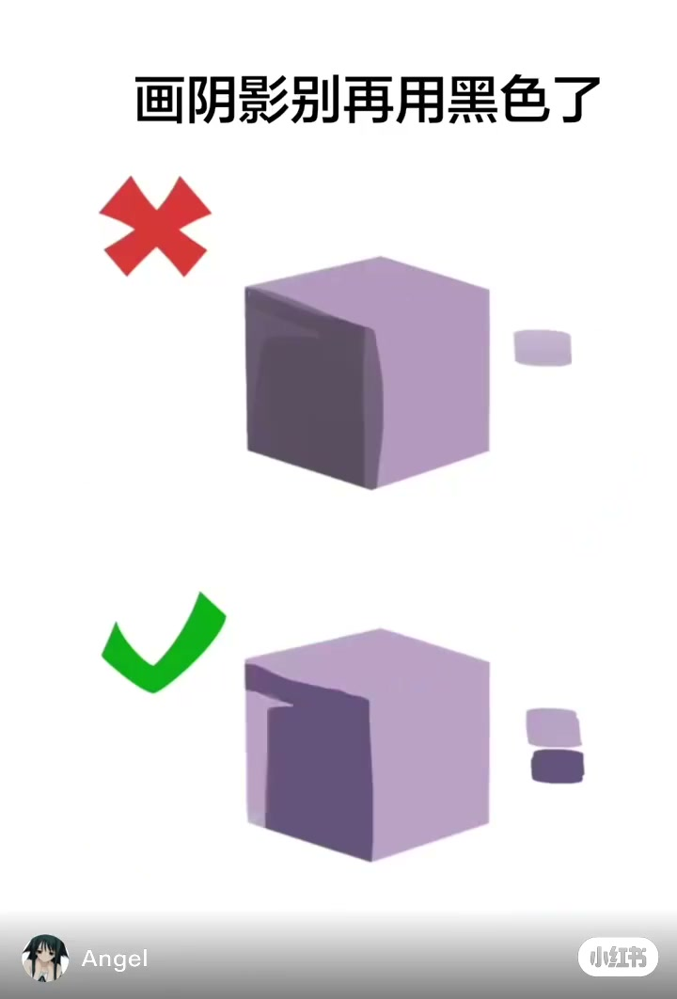
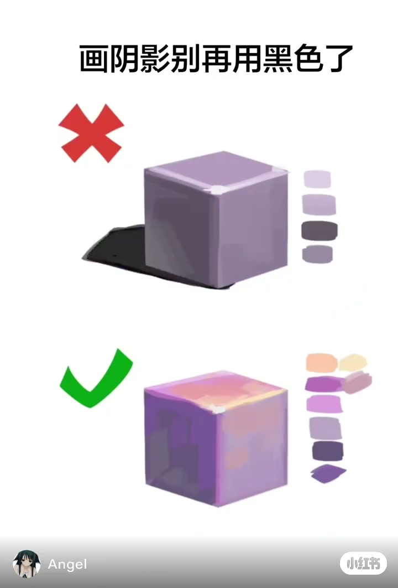
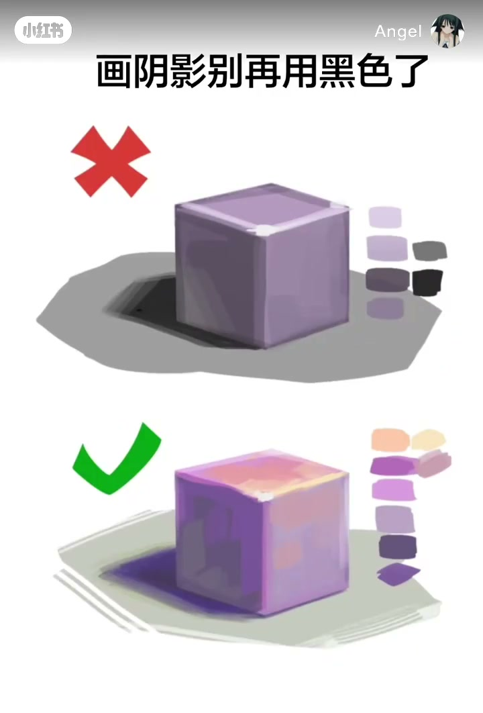

内容要点
这是一条视觉型短片。Whisper 只给出 1 段英文，对不上画面上的中文标题，所以下面的要点全部来自抽帧，不来自口播。
画面在比什么
依画面，红叉一侧的暗面和地面投影走向灰、近黑。绿勾一侧的顶面偏粉，暗面和地面投影保持深紫，地面本身偏浅灰绿。
依画面，这条片子用红叉和绿勾把「阴影收成灰黑」和「阴影仍带紫色、亮面偏暖」放在一起。它没有给出色值，也没有口播步骤。
00:00–00:02 标题先亮出来，两块立方体已经分面
开场白底上是一行黑字：「画阴影别再用黑色了」。字下面分成上下两行。上面左侧是红色叉，下面左侧是绿色勾。两行中间都是一块浅紫立方体，能看见顶面和两个侧面。
依画面，00:00 这一帧并不是两块完全平涂的色块。红叉旁边的立方体，左侧面已经比右侧面更灰，大约是灰紫；右侧面仍是浅紫。它右边有一块浅紫色块，和亮面接近。绿勾旁边的立方体左侧面是更深的紫，不是灰，右侧同样有浅紫色块。左下角是 Angel 的头像和名字，右下角是小红书标记。
Whisper 在 00:00–00:02 只认出一句英文：Hey you, watch I cry。这句和画面标题对不上，本文不把它当成讲解。

00:02–00:05 绿勾顶面涂暖，红叉底下出现近黑
依画面，红叉那一块变化主要在立方体左下方。到 00:04，那里已经有一块近黑的投影，边缘比较硬，颜色里几乎没有紫。立方体本身的左侧面仍是灰紫，右侧面是浅紫。右侧色块还是浅的。
绿勾那一块同时在加颜色。顶面不再是统一的浅紫，笔触偏粉，带一点浅暖色。暗面仍是紫，比亮面深，但没有收成灰。右侧的色块变多，从上到下能看到浅粉、中紫和更深的紫。画面没有标出这些色块的名字，也没有色环。

00:05–00:08 地面铺开，两处投影一个灰黑一个深紫
依画面，最后两秒两行都铺出一块地面。红叉一侧的地面是中性灰，立方体左下方的投影是灰黑色，比地面暗很多。立方体右侧除了浅紫色块，又出现灰色块，和这块投影靠近。
绿勾一侧的地面偏浅，并带一点灰绿。投影落在立方体左下方，取样是深蓝紫，不是灰，也不是纯黑。顶面仍偏粉，暗面是紫。右侧色块里能看到浅暖色和深紫，没有那排灰色块。
片子在这里结束。依画面，红叉演示的是暗部和投影往灰、往黑走；绿勾演示的是亮面偏暖、投影仍留在紫色里。它没有说明光源色温，也没有说地面的灰绿是不是环境色。这些是从颜色上看见的差别，不是作者口述的步骤。
